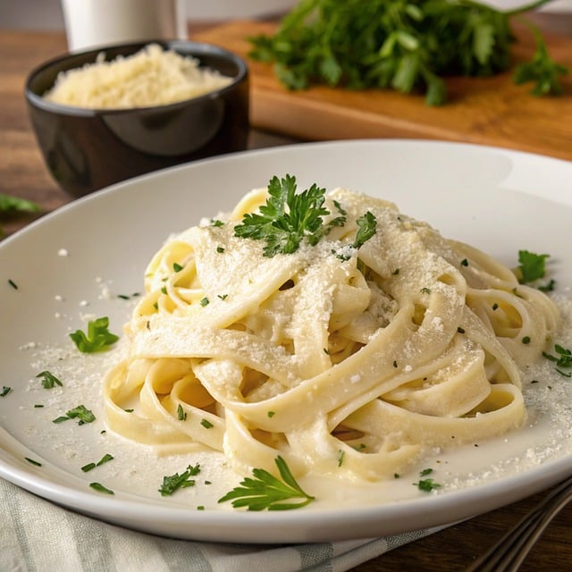

This creamy pasta gives subtle heat with hints of interesting spices, but won't set your month on fire. This is a perfect choice for an easy, succulent weeknight dinner that will have everybody asking for more.
Bring a large pot of salted waller to a boil. Add linguine and cook al dente according to package directions, 8 to 10 minutes. Drain, reserving 1/2 cup pasta water.
Meanwhile, melt butter in a skillet over medium heat. Add garlic, and cook until fragrant, about 30 seconds. Pour in white wine and lemon juice, and bring to a boil. Reduce heat, and simmer, stirring occasionally, for about 3 minutes.
In a small bowl, whisk cream, Cajun seasoning, flour, and italian seasoning together until smooth. Gradually add to the skillet, whisking constantle until well incorporated, about 1 minute. Stir in Parmesan and sun-dried tomatos, stirring until slightly hickened, 1 to 2 minutes.
Add linguine, and toss until well coated. If a bit thick, add pasta water a teaspoon at a time to reach your desired consistency. Season with black pepper, garnish with parsley or green onions, and serve.